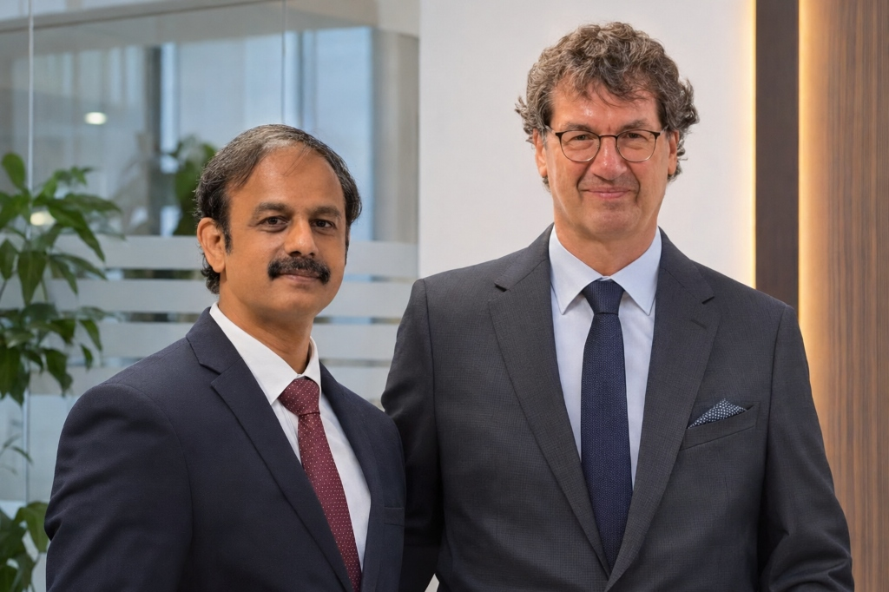
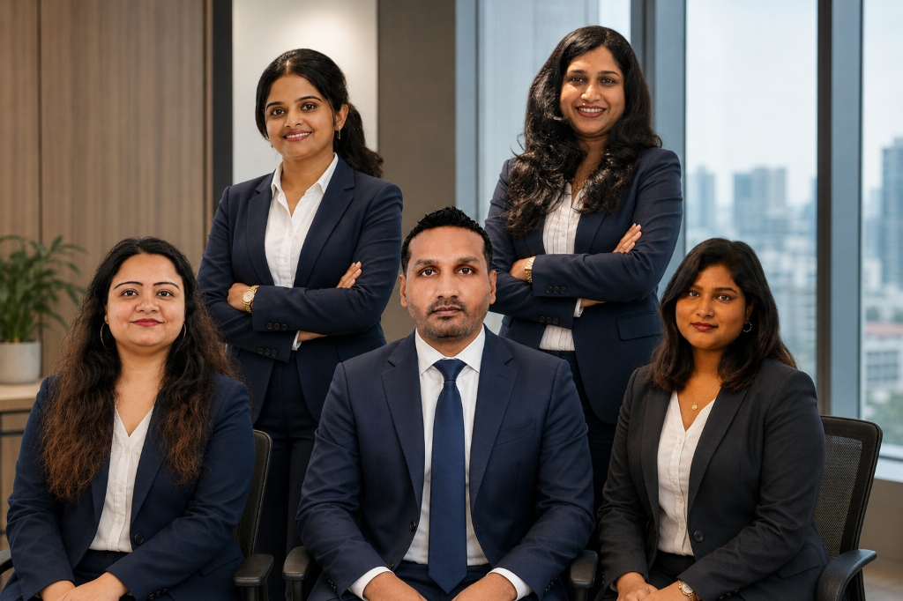

ESC UTILITY SERVICES PVT. LTD.
ESC Utility Services Pvt. Ltd., based in Technopark Trivandrum, India, and working in close partnership with ISI Management Consulting GmbH in Düsseldorf, Germany, is a leading business process management and specialist service provider for the transformation of companies in the energy, water, gas, and utility sectors. We support our clients in future-proofing their organizations while acting sustainably, efficiently, and innovatively.
Our specialists combine in-depth expertise in strategy, organization, IT, utility technology, business processes, and transformation with methodological excellence and a clear focus on the essentials.
In this way, we support companies along their entire value chain – from analysis through concept to successful implementation across platforms such as SAP IS-U, Wilken, and modern digital architectures.

Management of ESC Utility Services Pvt. Ltd.For more than a decade, ESC Utility Services Pvt. Ltd. has stood for a holistic service approach that takes responsibility from start to finish and creates solutions that work in practice and have a long-term impact.

Leadership Team of ESC Utility Services Pvt. Ltd.OUR LEADERSHIP TEAM
Our leadership team heads dedicated operational divisions across Business Process Management Services, Digitalisation & GIS, Security & Compliance, Operations & HRM, and Technology & Innovation. They bridge technical rigor with European client requirements every day, ensuring reliable execution and continuous delivery excellence.
With hands-on mastery in complex utility clearing, SAP IS-U and Wilken workflows, spatial network vectorization, and applied AI systems, our practice leaders mentor high-performing teams committed to 99.8% first-pass accuracy and sub-24h turnaround times for European municipal utilities.
Through dedicated in-house German language proficiency, rigorous ISO/IEC 27001:2022 governance, and continuous innovation, our leadership team ensures that every utility project is executed with transparency, security, and long-term dependable quality.